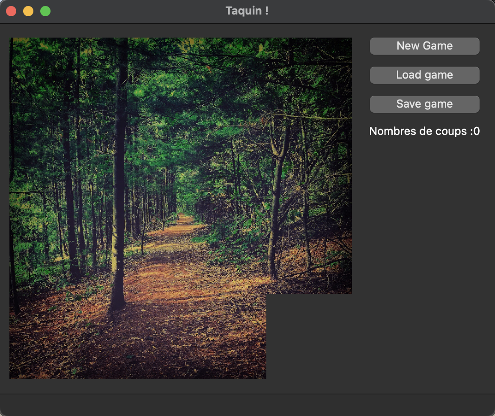
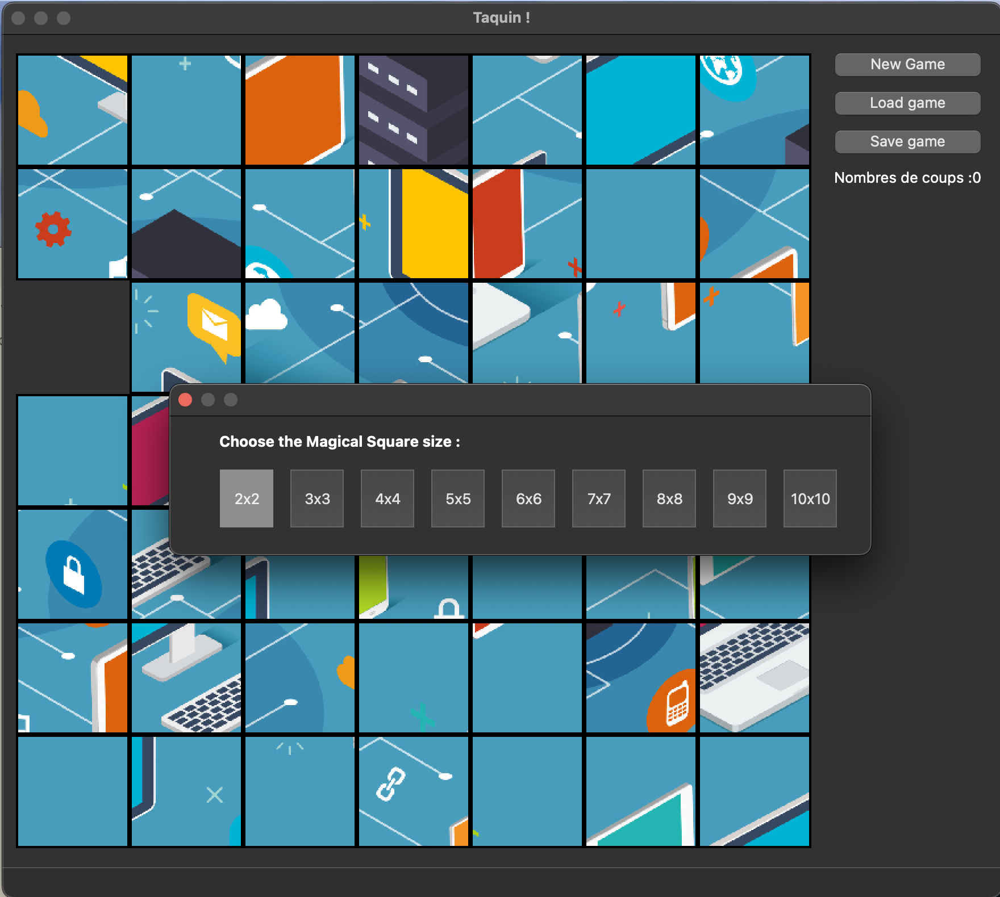
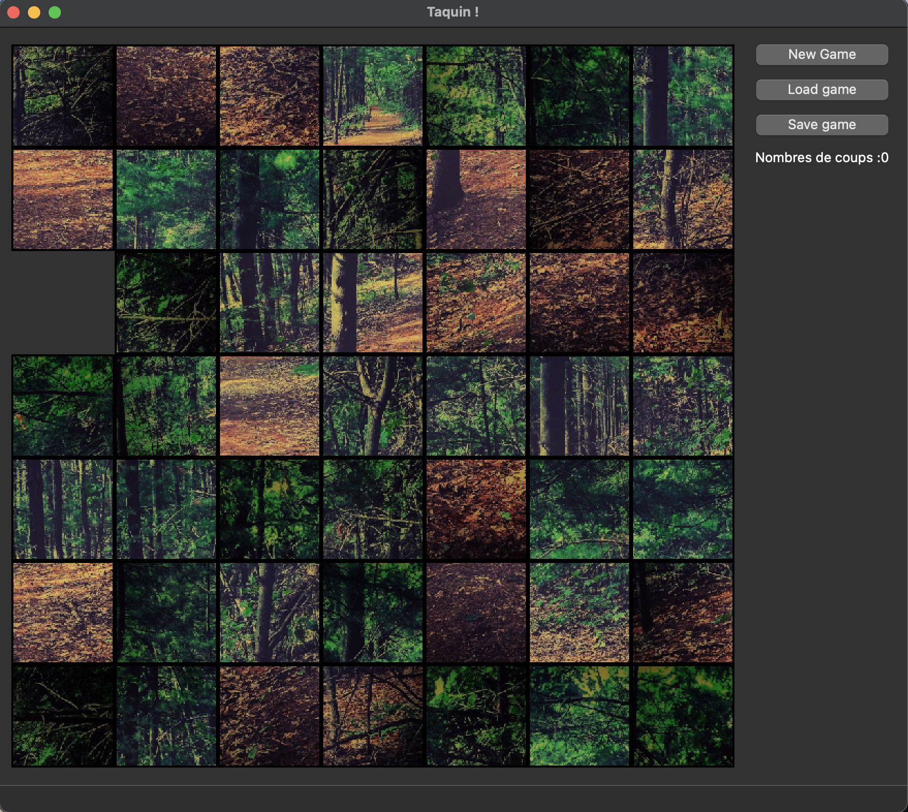
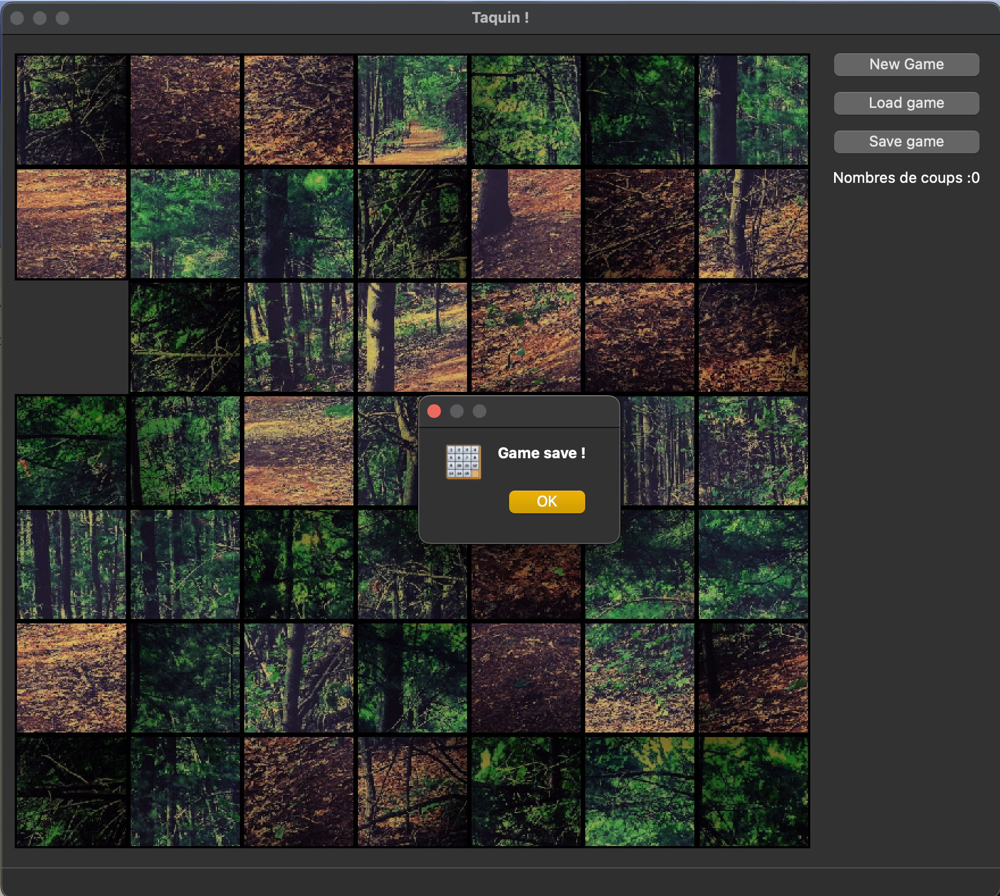

Introducing our Taquin project, a C++ masterpiece built with the Qt framework. Taquin offers an engaging puzzle-solving experience with a twist users can select their own images to be used in the puzzle. The puzzle pieces are scrambled, and the goal is to reconstruct the image by strategically rearranging the pieces. But there's more! Our Taquin project also includes the functionality to save and load your progress, ensuring that the fun and challenge can be picked up right where you left off. It's a delightful combination of image manipulation and puzzle-solving, brought to life with the power of C++ and Qt.
